DAY07 – Svájc tavaitól Tirolig
A mérés automatikusan indul oldalnyitáskor, majd 5 mp múlva frissít.
A távolságok minden célpontnál frissülnek.
1. Vierwaldstättersee, Meggen
mérés: várakozás
távolság: —
A Luzerni tó egyik legszebb panorámájú partszakasza Pilatus és Rigi sziluettjével.

2. Zugersee, Cham
mérés: várakozás
távolság: —
Kisebb, intimebb tó erős hegyi háttérrel, rendezett tóparti sétányokkal.
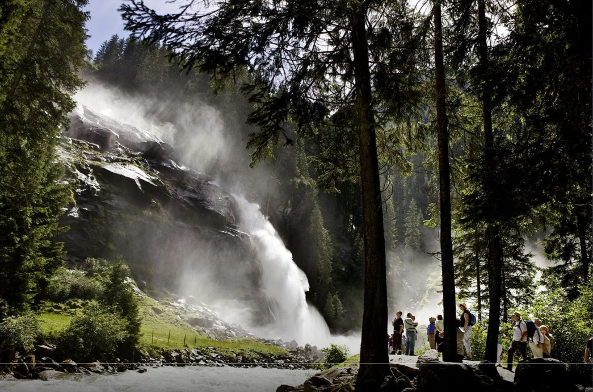
3. Hirzel hágó
mérés: várakozás
távolság: —
Szelíd gerincátvezetés a tórégió és a keleti hegyvidék felé, tanyás tájjal.

4. Zürichsee, Seedamm
mérés: várakozás
távolság: —
Átkelés a tó legkeskenyebb részén Pfäffikon és Rapperswil között, víz két oldalon.
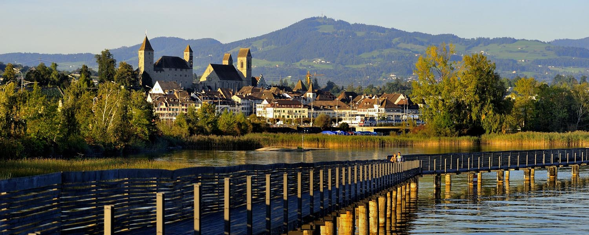
5. Rapperswil vára
mérés: várakozás
távolság: —
Középkori vár dombtetőn, rózsakertek és teljes panoráma a Zürichi tó medencéjére.
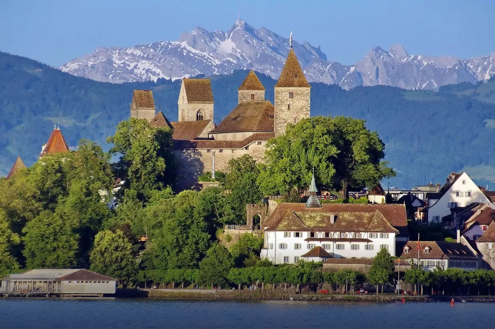
6. Ricken hágó
mérés: várakozás
távolság: —
Átmenet a tóvidék és a Toggenburg felé, vízválasztó jellegű gerincszakasz.
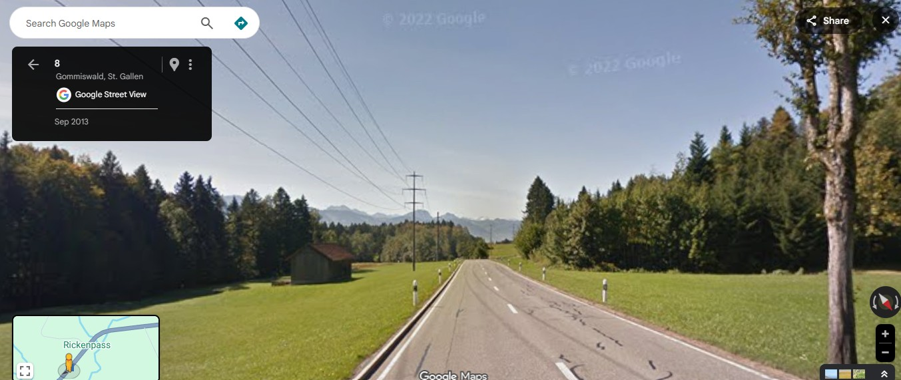
7. Thur völgye, Toggenburg
mérés: várakozás
távolság: —
Karakteres alpesi völgy a Churfirsten fogazott csúcsaival és fiatal hegyi folyóval.
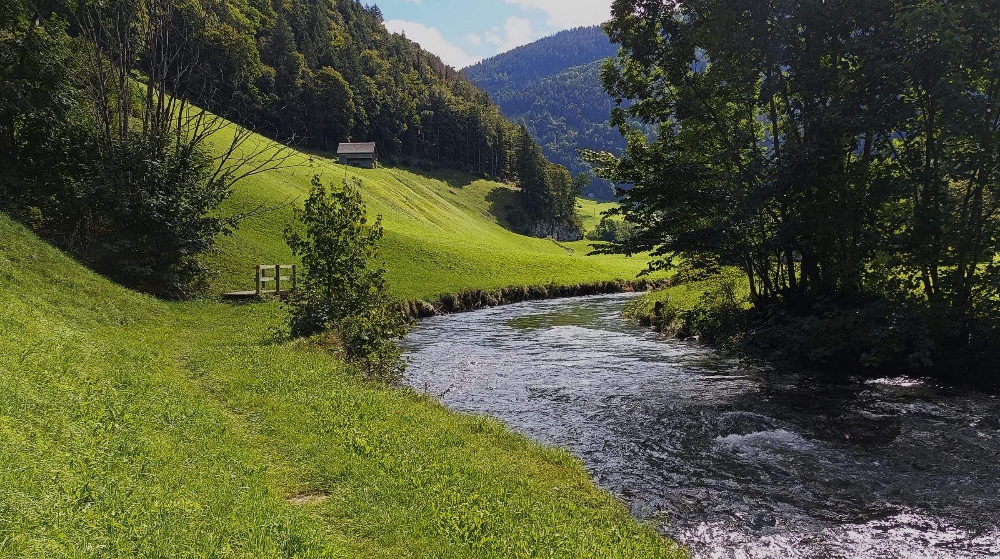
8. Wildhaus hágó
mérés: várakozás
távolság: —
Hegyi fennsík jellegű magasabb régió, vízválasztó a Thur és a Rajna völgye között.
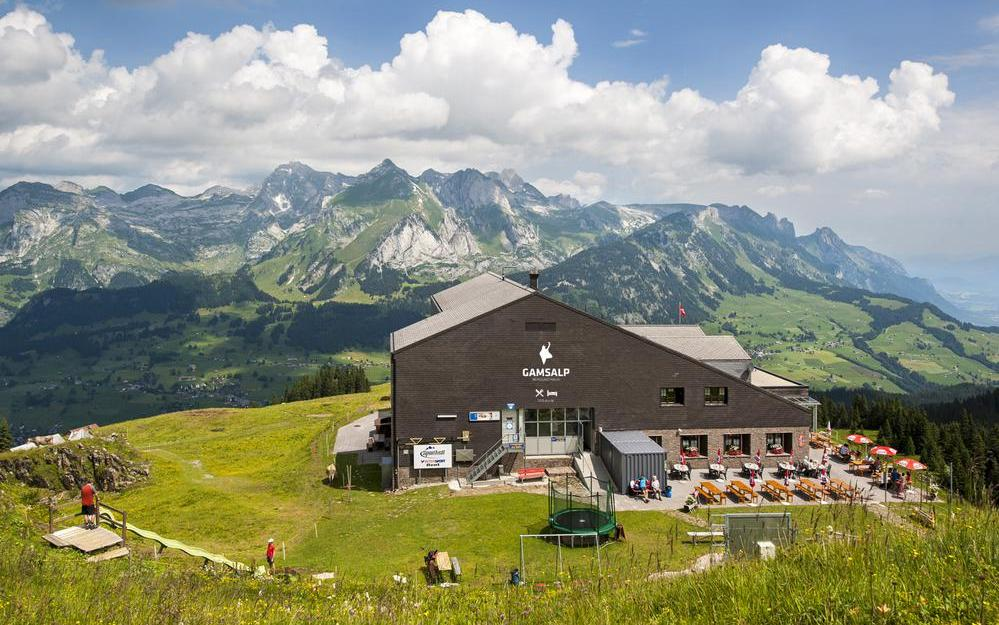
9. Arlberg hágó, Arlbergpass
mérés: várakozás
távolság: —
Keleti alpesi átjáró Tirol és Vorarlberg között, erős tájváltással és hegyi ritmussal.

10. Schloss Landeck
mérés: várakozás
távolság: —
Sziklaszirten álló vár az Inn völgye felett, természetes csomóponti rálátással.
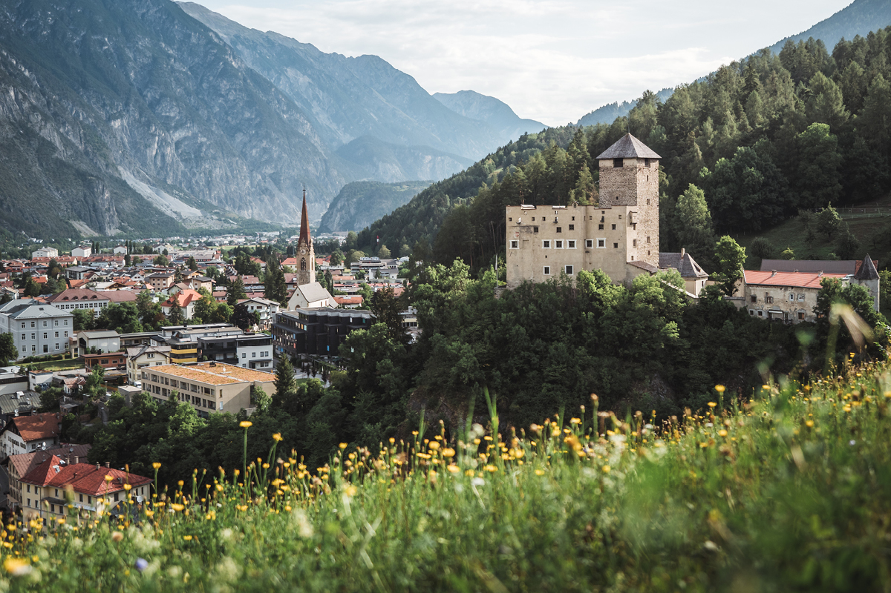
11. Stamsi apátság, Stift Stams
mérés: várakozás
távolság: —
Középkori kolostor az Inn völgyében, a tájhoz illeszkedő völgyfenéki központ.
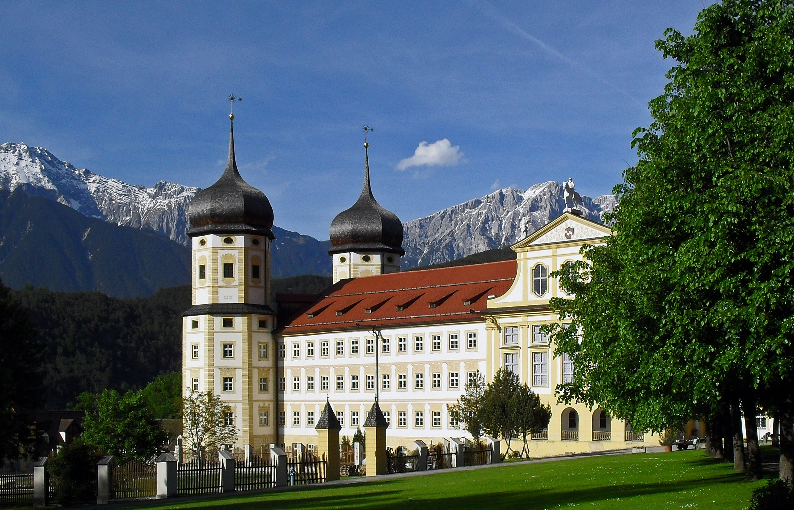
12. Martinswand, Zirl
mérés: várakozás
távolság: —
Monumentális, függőleges sziklafal az Inn völgyében, I. Miksa legendájával.
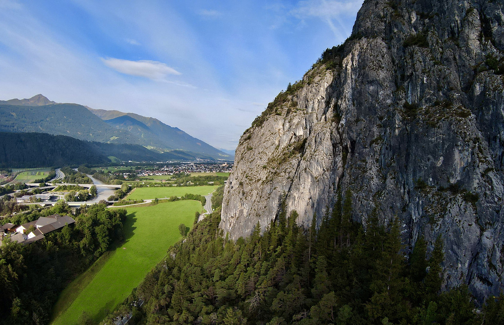
13. Goldenes Dachl, Innsbruck
mérés: várakozás
távolság: —
Innsbruck ikonja, aranyozott rézlemezekkel fedett erkély az óvárosban, most referencia pont.
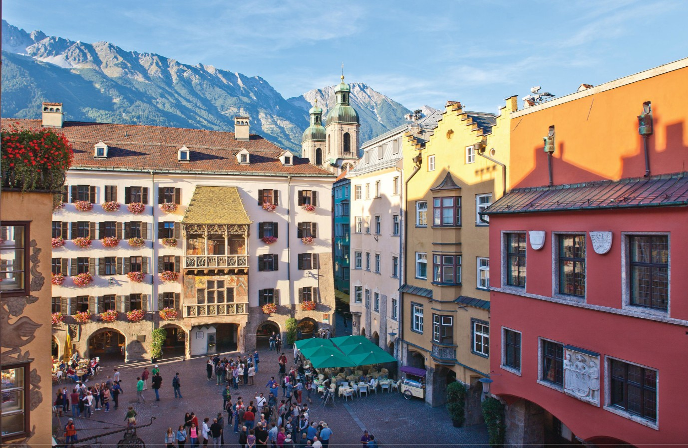
14. Swarovski Kristályvilág, Wattens
mérés: várakozás
távolság: —
Világhírű kristályélményközpont, André Heller Óriás bejáratával és látványos terek világával.
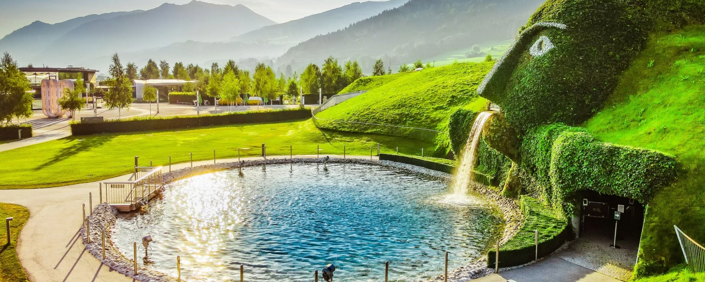
15. Tratzberg kastély
mérés: várakozás
távolság: —
Reneszánsz kastély az Inn völgye feletti hegyoldalban, erős tömeg és tájba ágyazottság.

16. Campingdorf Hofer, Hippach
mérés: várakozás
távolság: —
Végállomás a Ziller völgyében, stabil bázispont a Zillertal népszerű alpesi régiójában.

Térkép